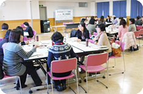
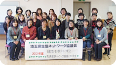

- 【日 時】
- 12月10日（月）10:30～14：00
- 【場 所】
- さいたまコープ コーププラザ浦和3階会議室
- 【出 席 者】
- 35人（会長、さいたまコープ12人、パルシステム埼玉6人、医療生協さいたま5人、さいたま住宅生協1人、勤労者生協1人、事務局）
畜産女性いきいきネットワーク埼玉7人
全国畜産縦断いきいきネットワーク1人
- 【テ ー マ】
- 「畜産女性いきいきネットワーク埼玉」との交流
【内 容】

- 滝澤会長から、歓迎挨拶しました。
- 畜産女性いきいきネットワーク埼玉大畠会長より、「生産者と消費者の皆さんとの交流は貴重で大変楽しみです」とご挨拶いただきました。
- ミニ学習会・・・獣医師が語る「食肉物語」
埼玉県食肉衛生検査センター 佐藤孝志さんを講師に、埼玉県内の食肉について学習しました。
- 「畜産女性いきいきネットワーク埼玉」の団体紹介と活動発表
- 生協ネットワーク協議会の会員生協の紹介と、各生協の取り組み報告
- 11月21日に「全国畜産縦断いきいきネットワーク交流研修会」の報告
- 畜産女性いきいきネットワーク埼玉との交流
グループに分かれて交流しました。簡単な自己紹介の後、生産者の方にいろいろな質問をしました。
【感 想】

- 学習を通じ、食肉の流通がわかり大変勉強になりました。念入りな検査のおかげで私たち県民は、安心して埼玉のお肉がいただけます。「お肉の地産地消」につながると気付きました。
- 動物の命をいただいていることに感謝、毎回「いただきます」といいたいです。
- 「苦労と思ったことがない」とおっしゃっていました。生産者の熱い思いが聞けて、本当によかったです。
他にも、多数の感想をいただきました。
|